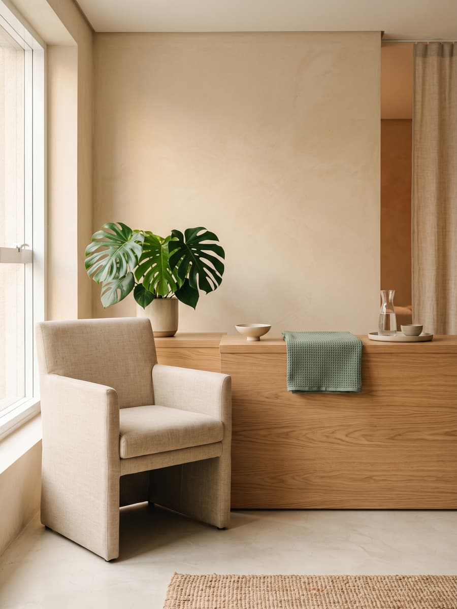
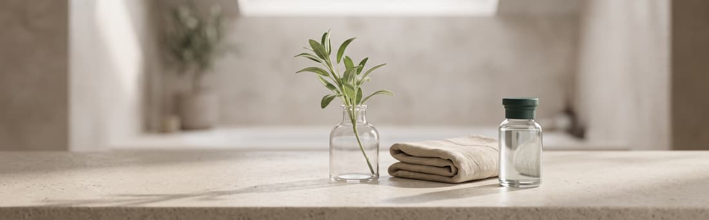
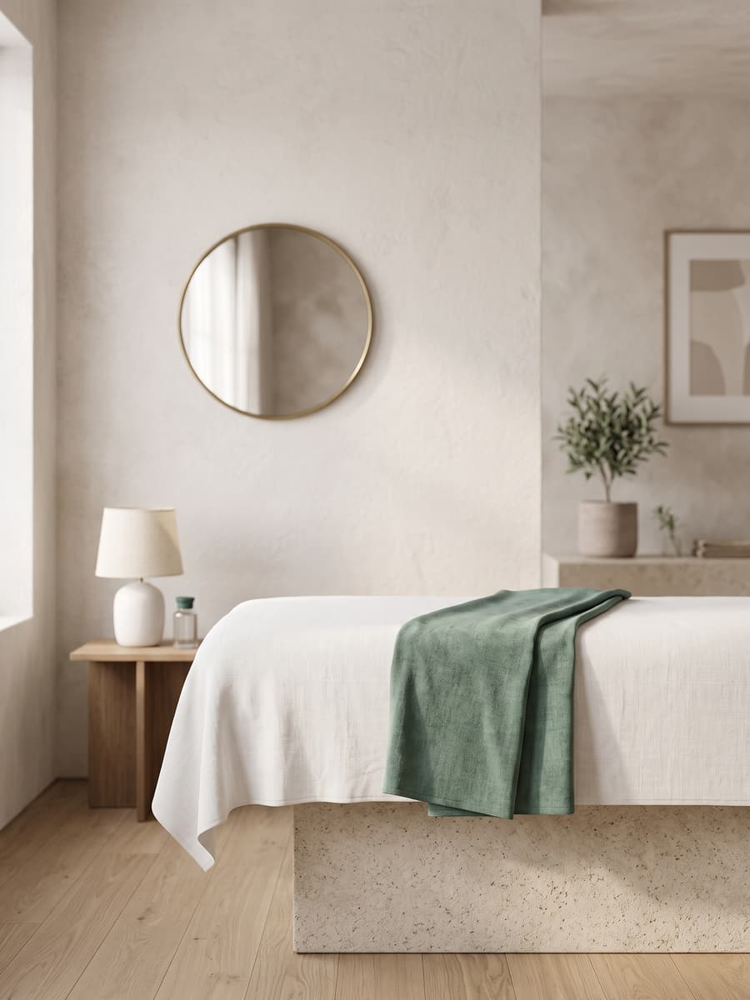

Avaliação facial completa
Consulta inicial com análise de pele, histórico e fotografia padronizada para definir o plano.
Protocolos faciais, corporais e de bem-estar para quem quer resultado natural e acompanhamento de verdade. Avaliação individual com profissionais registrados, em São Paulo.



A Aurema nasceu da vontade de tirar a estética do improviso. Reunimos dermatologia, fisioterapia dermatofuncional e nutrição em um mesmo espaço para que cada plano de tratamento parta de uma avaliação real, e não de um pacote pronto.
O atendimento é individual, com horário marcado e tempo suficiente para explicar o que faz sentido e o que não faz. Preferimos indicar menos procedimentos e sustentar o resultado a longo prazo.
Nossa equipe é registrada nos respectivos conselhos e trabalha com protocolos revisados, equipamentos certificados pela Anvisa e acompanhamento fotográfico da evolução em todas as etapas.
Toda indicação passa por avaliação presencial. Valores são apresentados apenas depois do diagnóstico.
Consulta inicial com análise de pele, histórico e fotografia padronizada para definir o plano.
Peelings, microagulhamento e bioestimulação combinados conforme o tipo de pele.
Toxina botulínica e preenchedores aplicados por médica, com foco em traço natural.
Drenagem, radiofrequência e ultrassom microfocado em ciclos com metas mensuráveis.
Pós-operatório, cicatrizes e recuperação de tecido com acompanhamento semanal.
Orientação alimentar e de sono que sustenta o resultado dos protocolos estéticos.
Medicina, fisioterapia e nutrição no mesmo prontuário, discutindo o mesmo caso.
Você sai da avaliação sabendo o que será feito, em quantas sessões e por quê.
Agenda espaçada: sem sala de espera cheia e sem atendimento apressado.
Registro fotográfico e relatório a cada ciclo, para comparar resultado real.
Rua Doutor Ovídio Pires, 148, sala 32
Jardim Paulista, São Paulo, SP
CEP 01423-000
Seg a sex, 9h–19h
Sábado, 9h–14h
Estacionamento no prédio
10 min do metrô Brigadeiro
Não. A avaliação inicial é sem compromisso e serve para entender seu caso antes de qualquer indicação de tratamento.
A maioria dos protocolos causa desconforto leve e passageiro. Sempre explicamos o que esperar antes de iniciar, e usamos recursos de conforto quando indicado.
Isso varia de acordo com o protocolo e o objetivo. Pode aparecer em poucos dias ou só depois de alguns ciclos. A gente detalha isso na avaliação, junto com o número estimado de sessões.
Não é obrigatório para a avaliação inicial. Se for necessário algum exame complementar, nossa equipe orienta você antes da sessão.
Sim, todos os atendimentos são registrados e emitidos com nota fiscal.
Conte o que te incomoda e nossa equipe responde com os próximos passos.